Работа с хранилищем
7-zip
7‑Zip — это бесплатный архиватор с открытым исходным кодом, который поддерживает множество форматов, обеспечивает высокую степень сжатия и позволяет создавать зашифрованные архивы.
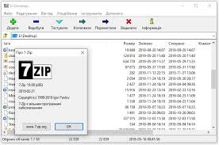
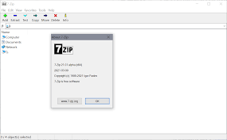
BleachBit
BleachBit — это бесплатная программа с открытым исходным кодом для очистки дискового пространства и защиты конфиденциальности, которая удаляет временные файлы, кэш, историю и другой системный мусор.
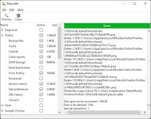
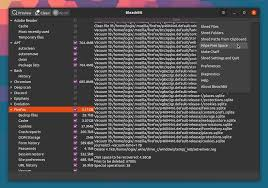
PortableApps.com Platform
PortableApps.com Platform — это бесплатная платформа, позволяющая устанавливать и запускать портативные приложения прямо с USB-накопителя или облачного хранилища, сохраняя ваши данные и настройки при работе на любом компьютере.
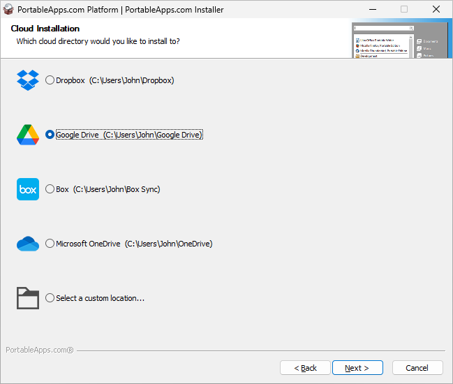
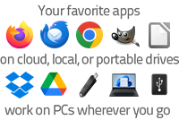
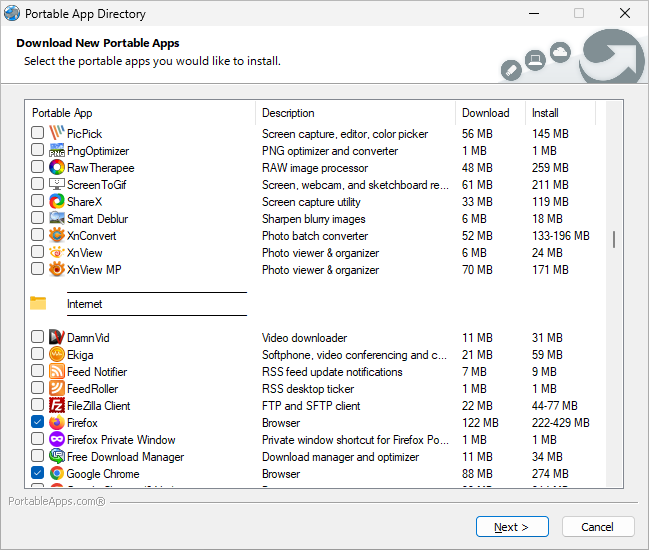
APK Installer by Uptodown
APK Installer by Uptodown — это бесплатное приложение для Android, которое позволяет устанавливать любые APK-файлы (включая сложные форматы XAPK и разделенные APK), создавать резервные копии установленных приложений, а также делиться ими с другими устройствами без доступа к интернету.
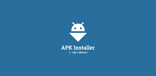
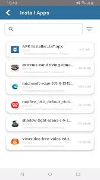
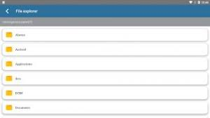
Разработка
Arduino IDE
Arduino IDE — это бесплатная среда разработки для программирования плат Arduino, позволяющая писать код и загружать его в микроконтроллер.
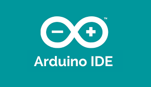
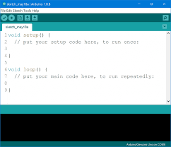
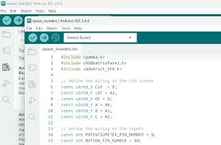
Git
Git — это распределённая система контроля версий с открытым исходным кодом, которая позволяет отслеживать изменения в файлах, работать над проектами в команде и управлять разными версиями кода, сохраняя полную историю изменений локально на вашем компьютере .
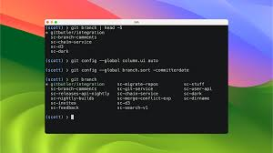
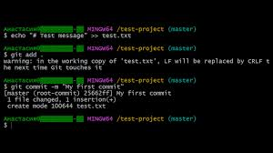
Notepad++
Notepad++ — это бесплатный текстовый редактор с открытым исходным кодом для Windows, который поддерживает подсветку синтаксиса для множества языков программирования, работу с вкладками, макросы и плагины.
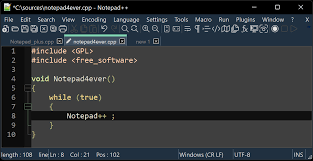
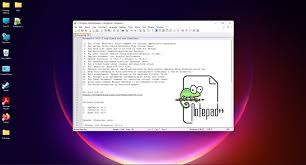
vim
vim — это свободный текстовый редактор с открытым исходным кодом, известный своей эффективностью и скоростью работы благодаря модальному интерфейсу и управлению исключительно с клавиатуры.
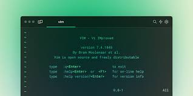
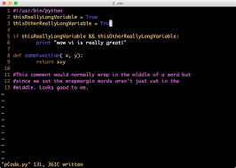
Visual Studio Code
Visual Studio Code — это бесплатный и расширяемый редактор кода с открытым исходным кодом от Microsoft для Windows, Linux и macOS, который поддерживает подсветку синтаксиса, IntelliSense (автодополнение), отладку, встроенные инструменты Git и тысячи расширений под любые задачи разработки.
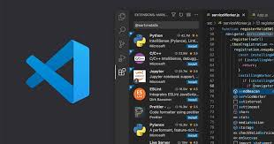
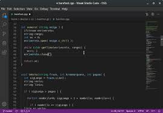
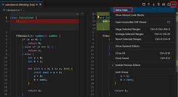
Литература: математика
Математический анализ В. А. Зорича (часть 1)
Первый том Зорича — фундаментальный учебник по математическому анализу для начинающих, охватывающий введение в анализ, дифференциальное и интегральное исчисление.
СкачатьМатематический анализ В. А. Зорича (часть 2)
Второй том Зорича — продолжение курса, посвященное кратным интегралам, рядам, дифференциальным формам и функциональному анализу.
СкачатьСборник задач и упражнений по математическому анализу Б. П. Демидовича
Задачник Демидовича — основной сборник задач по матанализу, содержащий более 4000 упражнений с ответами по всем разделам курса.
Скачать